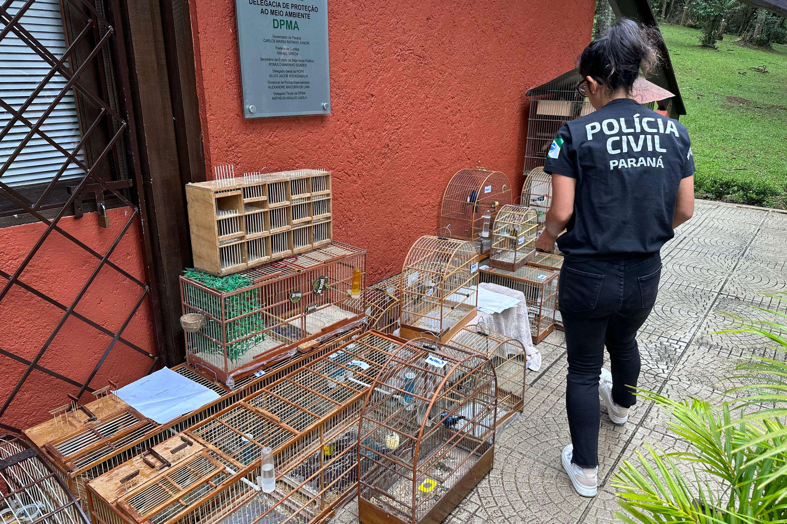
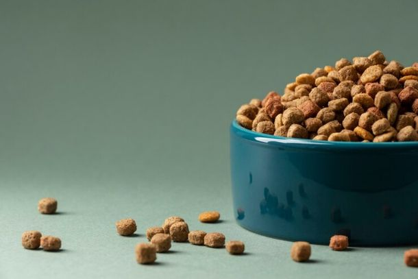
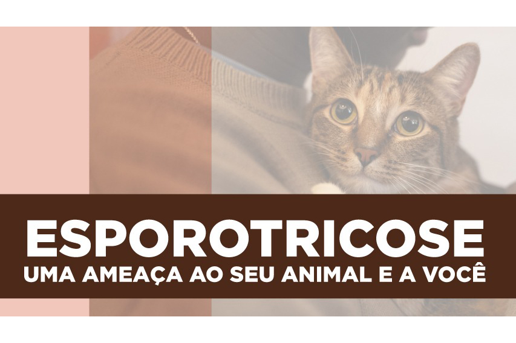
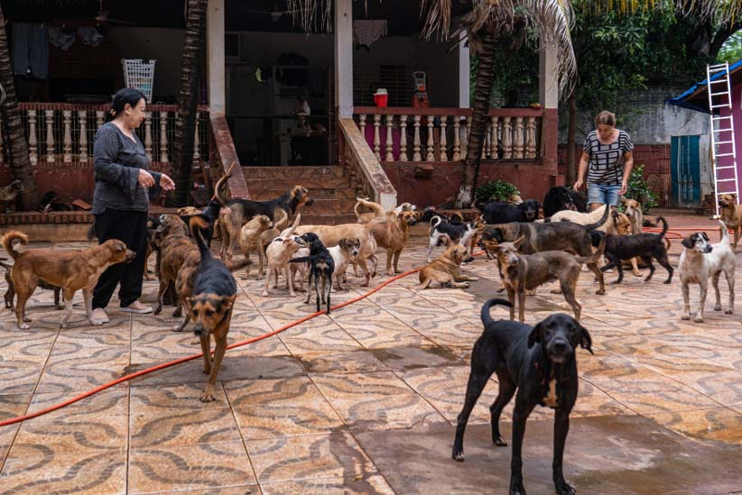

Notícias

Polícia Civil do Paraná orienta sobre como denunciar maus-tratos à animais
Mais detalhes
Protetores de animais e ONGs podem se inscrever para receber ração para cães e gatos em Foz do Iguaçu
Mais detalhes
Prefeitura anuncia castrações de cães e gatos em Foz do Iguaçu
Mais detalhes

Cartão-Ração é aprovado na Câmara Municipal de Foz do Iguaçu
Mais detalhes

Paraná é o primeiro estado a oferecer medicamento para tratar animais com esporotricose
Mais detalhes

Número de animais abandonados em Foz é o pior da última década, dizem protetoras
Mais detalhes